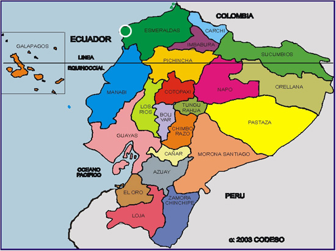

Ecuación matricial
|
Si \(A\) es una matriz cuadrada \(n \times m\) cuya inversa es \(A^{-1}\) y si \(X\) es una matriz incógnita y \(B\) una matriz conocida, ambas con \(n\) filas, entonces la solución de la ecuación matricial \[A·X=B\] viene dada por \[\pmb{X=A^{-1}·B}\] |
Al resultado anterior se llega de la siguiente forma:\[A·X=B\]\[A^{-1}·A·X=A^{-1}·B; \quad \text{ y como }A^{-1}·A=I=\text{matriz identidad} \]\[I·X=A^{-1}·B\]\[X=A^{-1}·B\]
Completa
Ahora te proponemos un ejercicio más directo en el que observes que podemos resolver ecuaciones con matrices. En este caso la ecuación matricial que te proponemos es la siguiente: \[A·X=B\]
Donde las matrices que aparecen son: \[A = \begin{pmatrix} 1 & 2 \\ 0 & 1 \end{pmatrix} \text{ y } B = \begin{pmatrix} 1 & 2 \\ 3 & 4 \end{pmatrix}\]
Inténtalo multiplicando ambos lados de la ecuación por la parte izquierda por la matriz \(A^{-1}\)
Ejemplos
En los siguientes videos puedes ver ejemplos de resolución de ecuaciones matriciales.
- Cómo despejar ecuaciones matriciales:

- Dadas las matrices:\[A = \begin{pmatrix} 1 & 1 \\ 1 & -2 \end{pmatrix}, \quad I = \begin{pmatrix} 1 & 0 \\ 0 & 1 \end{pmatrix}\]
se pide:
-
-
Hallar dos constantes \(a\) y \(b\), tales que \(A^2 = aA + bI\).
-
Sin calcular explícitamente \(A^3\) y \(A^4\), y utilizando sólo la expresión anterior, obtener la matriz \(A^5\).
-
- Dadas las matrices \[A = \begin{pmatrix}
0 & 1 & 1 \\
1 & 0 & 0 \\
0 & 0 & 1
\end{pmatrix}
\quad
B = \begin{pmatrix}
1 & -1 & 1 \\
1 & -1 & 0 \\
-1 & 2 & 3
\end{pmatrix} \]
resuelve
\[AX + B = A^2\]
Ejercicio resuelto

Una empresa de cacao importa este alimento desde dos zonas situadas cerca de la frontera de Colombia llamadas Chimborazo y Cotopaxi. Durante los tres primeros meses del año, por cada saco que exportaba de la primera zona pensaban pagar 2 euros y por cada saco de la segunda pagaba 3 euros.
Pero ahora llega una época de crisis y han decidido pagar 1 euro por cada saco venga de la zona que venga. El administrador de la empresa ha estado echando cuentas y ha obtenido una tabla en la que recoge el dinero que deberían haber pagado si hubieran mantenido el precio inicial y el dinero que realmente van a pagar cada uno de los meses:
| Con precio inicial | Con precio final | |
|---|---|---|
| Enero | 97 | 38 |
| Febrero | 54 | 22 |
| Marzo | 138 | 53 |
Un segundo administrador se pregunta ¿Cuánto deberían haber pagado cada mes si hubiesen pagado 1 euro por cada saco proveniente de Chimborazo y 2 por cada saco proveniente de Cotopaxi? Evidentemente, para calcular esto, deberá conocer primeramente el número de sacos que ha comprado la empresa en cada una de las zonas. A ver si puedes echarle una mano.
Planteamiento y Solución Matricial
Calculemos primero la matriz de precios \( P \):
| Precio inicial | Precio final | |
|---|---|---|
| Chimborazo | 2 | 1 |
| Cotopaxi | 3 | 1 |
Sabemos que la matriz de dinero que se hubiera pagado cada mes y dinero que se va a pagar es:
| Con precio inicial | Con precio final | |
|---|---|---|
| Enero | 97 | 38 |
| Febrero | 54 | 22 |
| Marzo | 138 | 53 |
Ahora nos proponemos calcular una matriz \( X \) que tenga la forma:
| Sacos en Chimborazo | Sacos en Cotopaxi | |
|---|---|---|
| Enero | \( a_{11} \) | \( a_{12} \) |
| Febrero | \( a_{21} \) | \( a_{22} \) |
| Marzo | \( a_{31} \) | \( a_{32} \) |
De esta forma sabemos que:
Observamos que la matriz \( P \) tiene determinante distinto de cero, por lo que podemos utilizar su matriz inversa (que existe). Por lo tanto, si multiplicamos a ambos lados de la igualdad por la matriz inversa de \( P \), podremos despejar la \( X \).
Lo hacemos por la parte derecha ya que, recuerda, en el producto de matrices el orden de los factores importa.
\[ X \cdot P \cdot P^{-1} = C \cdot P^{-1} \]
Por tanto, como el producto de una matriz por su inversa es la matriz identidad:
\[ X \cdot I = C \cdot P^{-1} \]
Y como el producto de una matriz por la matriz identidad es la misma matriz, tenemos que:
Por tanto, ya tenemos la forma de calcular la matriz \( X \) que necesitamos para resolver el problema.
Completa
Escribe ahora la matriz \(X\) solución del ejercicio anterior y escribe debajo la matriz de lo que hubieran pagado cada mes según los cálculos del segundo administrador